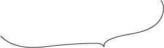

ホーム ＞ 治療メニュー＞予防歯科
予防歯科
唾液検査（サリバテスト） 新しい予防虫歯です
唾液検査をすると・・・

の原因の組み合わせは人それぞれ
原因が違えば、予防法も違います。 虫歯の原因の組み合わせは人それぞれ、毎日歯磨きしていても 虫歯になる人とそうならない人がいるのはそのためです。
検査時間は簡単・短時間・もちろん痛くありません
あなたが実行しやすい効果的な虫歯予防方法をご提案します。
原因が違えば、予防法も違います。 虫歯の原因の組み合わせは人それぞれ、毎日歯磨きしていても 虫歯になる人とそうならない人がいるのはそのためです。
検査時間は簡単・短時間・もちろん痛くありません
あなたが実行しやすい効果的な虫歯予防方法をご提案します。
あなたのかかりつけ”歯科医院”として、ずっと歯を守ることができます。
唾液検査によってあなたのお口の特徴がわかれば、
あなたが生涯自分の歯を保てるようにアドバイスしていくことができます。
虫歯ができるたびに治療するよりも経済的です。
【検査項目】
唾液の出る分量
唾液の性状
虫歯菌の数の測定
飲食の回数
フッ素やキシリトールの利用
唾液緩衝能
（酸を中和する力）
ブラッシングの回数や
プラークの付着状況
以上の検査項目をパソコンに入力し、どの項目において危険度が高いか一目で理解できるように表示させたいと思います。
全く痛みはなく、短時間で検査は終了します。
最終的な分析には３日ほどかかりますが、患者さんの身体的負担はほとんどありませんので、 ぜひ積極的に検査を受け、虫歯のない快適な生活を維持していただきたいと思います。
虫歯予防で大切なことは、規則正しい食生活をとり、良く噛んで食べること。 間食は少なくし、食後はよく歯磨きを行いフッ素やキシリトールガムなどを積極的に利用すること。 そして定期的に検査を受け、歯石除去やPMTCを受けましょう。
最終的な分析には３日ほどかかりますが、患者さんの身体的負担はほとんどありませんので、 ぜひ積極的に検査を受け、虫歯のない快適な生活を維持していただきたいと思います。
虫歯予防で大切なことは、規則正しい食生活をとり、良く噛んで食べること。 間食は少なくし、食後はよく歯磨きを行いフッ素やキシリトールガムなどを積極的に利用すること。 そして定期的に検査を受け、歯石除去やPMTCを受けましょう。